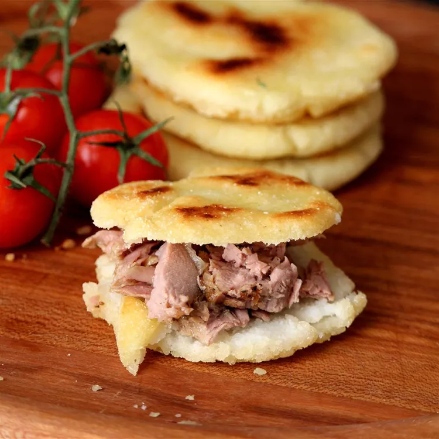

Arepas
Description
A South American staple, particularly in Columbia and Venezuela, arepas are stuffed cornmeal cakes that are crispy outside and fluffy inside. They're a popular food item for street vendors, but are also regularly made in homes. Arepas are eaten at all times of the day, often as a snack or side dish to a main meal.
Ingredients
- 2 ½ cups lukewarm water
- 1 teaspoon salt
- 2 cups pre-cooked whit cornmeal (such as P.A.N.)
- ¼ cup vegetable oil, or as needed
How to make
- Stir water and salt together in a medium bowl; gradually stir in cornmeal with your fingers until the mixture forms a soft, moist, malleable dough.
- Form dough into eight 2-inch diameter balls; pat each ball to flatten into a 3/8-inch-thick arepa patty.
- Heat oil in a large skillet over medium heat; fry arepas in batches until golden brown, about 4 to 5 minutes per side. Transfer cooked arepas to a paper towel-lined plate to drain until cool enough to handle.
- Slice halfway through each arepa horizontally with a thin serrated knife to form a pita-like pocket.